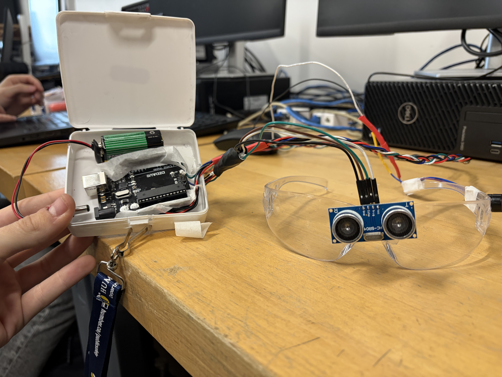

Course: TECH 117 (Computer Engineering Technology, Winter 2026)
Instructor: Ph.D. Ana Rodrigues
Team Members:
People who are blind, by definition, are unable to see their surroundings. They often need to rely on external supports in order to navigate the world, such as a seeing-eye dog or a white cane. However, these supports are not always available, and their use may not always be possible in certain settings. Our proposed solution is a wearable device that will use specific sound tones to signal the approximate distance between the user and the object they are looking at. This device will give visually impared people an additional tool in order to safely navigate their environment, by allowing them to sense the objects in the space around them, as well as warning them when an object comes too close.
The ultrasonic sensor measures distance; the Arduino activates the buzzer according to distance thresholds allowing the users to be alerted when the are about to make contact with an object.

| Item | Quantity | Unit Price | Subtotal | Source |
|---|---|---|---|---|
| Arduino Uno Rev3 | 1 | $27.60 | $27.60 | Arduino Store |
| HC-SR04 Ultrasonic Sensor | 1 | $3.95 | $3.95 | Adafruit |
| Passive Buzzer | 1 | $0.95 | $0.95 | SparkFun |
| Jumper Wires | 1 set | $3.50 | $3.50 | SparkFun |
| Safety Glasses | 1 | $0.30 | $0.30 | Uline |
| Lanyard | 1 | $1.00 | $1.00 | Amazon |
| Carrying Case | 1 | $1.50 | $1.50 | Amazon |
| Estimated Total | $42.25 | — | ||
The following image shows the assembled prototype on a breadboard.

The following Arduino code controls the system, buzzer based on distance readings from the HC-SR04 sensor.
/*
*/
//pin numbers
const int BUZZER = 2;
const int ECHO = 10;
const int TRIG = 9;
float distance = 0, avgDistance = 0;
int currentZone = 0, lastZone = 0, timer = 0;
double lastBuzzerTime;
float distances[3] = {0.0, 0.0, 0.0};
//the far bound of each zone. these can be easily adjusted by the end user to customize their experience.
int zones[5] = {150, 75, 50, 25, 10};
//the timer for how often the buzzer sounds. this can also be adjusted by the end user
int zoneTimers[6] = {4000, 2000, 1000, 500, 250, 100};
int soundFreq[6] = {200, 300, 500, 750, 1000, 1500};
void setup() {
pinMode(BUZZER, OUTPUT);
pinMode(TRIG, OUTPUT);
pinMode(ECHO, INPUT);
Serial.begin(9600);
lastBuzzerTime = millis();
}
/* The basic logic is that when the distance is measured by the ultrasonic sensor, it's catergorized into a zone, with higher numbers being closer
each zone has an associated "timer" value that denotes the length of time between buzzer activations
in order to not be blocked by delay() code, we check the difference between the current time with millis() and last recorded buzzer time
if the difference in time is greater than the timeout timer, sound the buzzer and update the most recent buzzer time
*/
void loop() {
Serial.print(distance);
Serial.print("\n");
delay(50);
//gets distance
readDistance();
//applies averaging to mitigate jitter
smoothing();
//determines zone distance and thus beep timeout
if(avgDistance > zones[0]) {
currentZone = 0;
} else if(avgDistance > zones[1] && avgDistance < zones[0]) {
currentZone = 1;
} else if(avgDistance > zones[2] && avgDistance < zones[1]) {
currentZone = 2;
} else if(avgDistance > zones[3] && avgDistance < zones[2]) {
currentZone = 3;
} else if (avgDistance > zones[4] && avgDistance < zones[3]) {
currentZone = 4;
} else {
currentZone = 5;
}
//update timer
timer = zoneTimers[currentZone];
//check timeout and sound if it's been long enough
if(millis() - lastBuzzerTime > timer) {
soundBuzzer();
}
/*if(currentZone != lastZone) {
lastZone = currentZone;
} */
}
void readDistance() {
digitalWrite(TRIG, LOW);
delay(2);
digitalWrite(TRIG, HIGH);
delay(2);
digitalWrite(TRIG, LOW);
distance = pulseIn(ECHO, HIGH) / 58.0;
}
//sounds the buzzer and stores the time of sound
void soundBuzzer() {
tone(BUZZER, soundFreq[currentZone]);
delay(50);
noTone(BUZZER);
lastBuzzerTime = millis();
}
//stores each of the last 3 distances in an array and averages them out
void smoothing() {
distances[2] = distances[1];
distances[1] = distances[0];
distances[0] = distance;
avgDistance = (distances[0] + distances[1] + distances[2])/3.0;
}
The system effectively demonstrates distance-based alerting using Arduino. It’s affordable, educational, and sustainable through reusable components.